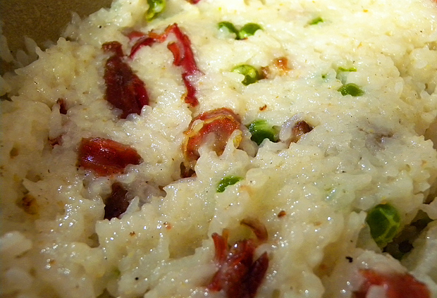

又下雪了，惊蛰都已经过去好几日，这倒春寒也倒得有点过了吧。上班路上雪下得很大，尽管到处都积满白雪，整条街却有种暗黄阴郁的色调，看上去总觉得不真实，就像是被处理成HDR效果的照片，或者是放大了成百上千倍的微缩街景，而天空就是个泛着黄色半透明的玻璃盖子，不知被谁摇了摇，里面就飘起雪花来。 昨天终于去三里屯抱了苹果回家，路上新闻说雪后的礼拜一，又是两会，早高峰肯定拥堵，只是没想到今天的惠新西街南口站到9点才解除封锁，黑压压一片全是人，也不放行，上班族们就都跟那儿耗着，我还想着早点到公司看奥斯卡直播呢，没想遇到这样的事。好不容易等到放行，来了辆地铁，呼拉拉恨不得一下挤进去百来号人。我已经算排得很靠前了，也等了两拨才搭上。后来在网上看到大众在斯德哥尔摩地铁站的钢琴键盘音乐楼梯，吸引了好多路人不乘扶梯走楼梯，还蹦来蹦去自创小曲，很有创意，但回头一想这要是放在中国，估计要不了1个小时就会被踩坏。
中午收到公司邮件，女员工可以休假半天，男同事们在一旁叫苦连天，大叹不公。感觉刚到公司没坐多久，杯子里的胖大海都还没完全泡开，就要收拾东西闪人了。一路忍住没吃午饭，打算回家随便吃点，回家一翻冰箱又改变了主意，决定趁这个下午练练厨艺。于是拿了几根腊肠，一根腊鸭腿，一袋豌豆开始做腊味煲仔饭，本来想直接用电饭煲做的，后来看网上攻略说电饭煲做不出黄黄的锅巴，就翻出好久不用的砂锅，拿醋水泡了半天除味儿，一边泡好米，一边烧开水把腊鸭腿和豌豆煮好，一边洗衣服，一边还顺手自己剪了剪刘海。其实已经不是第一次做煲仔饭，但拿砂锅焖米饭的时候，水还是放多了，最后做出来的米完全不是一粒一粒的，粘软得都可以给婴儿吃了。照片放最后，因为实在觉得不怎么好看，不过味道还是很美滴。
